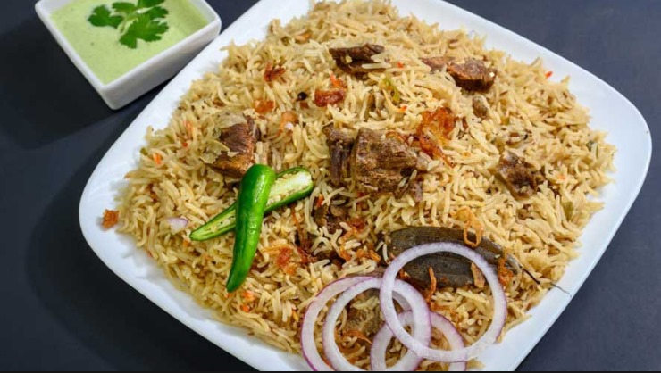

Ingredients|
Instructions|
Chef's Tip|
About
Delicious Pulao Recipe
Preparation Time: 120 minutes
Cooking Time: 140 minutes

Ingredients
For Beef Stock (Yakhni)
- 1/2 kg Beef (with bones)
- 6 cups water(H20)
- 1 large sliced onion
- 6-8cloves garlic, minced
- 1 inch Ginger sliced
- 1 teaspoon salt
For Pulao
- 2 cups(soaked) Basmati rice
- 2 medium sliced Onions
- 1/2 cup yogurt
- 1 teaspoon salt
- 1 teaspoon ground cumin,cardamom etc.
Instructions
- Step 1:
- Boil the beef with spices to make yakhni.
- Step 2:
- Saute(fry till light brown) onions and add beef and yogurt mixture.
- Step 3:
- Mix in rice and cook on low flame.
Chef's Tip
"Always soak your rice beforehand for a fluffy result"
For more about this recipe, visit About
Recipe by Amna's Kitchen
Email: A_kitchen@gmail.com
Location: Karachi, Pakistan